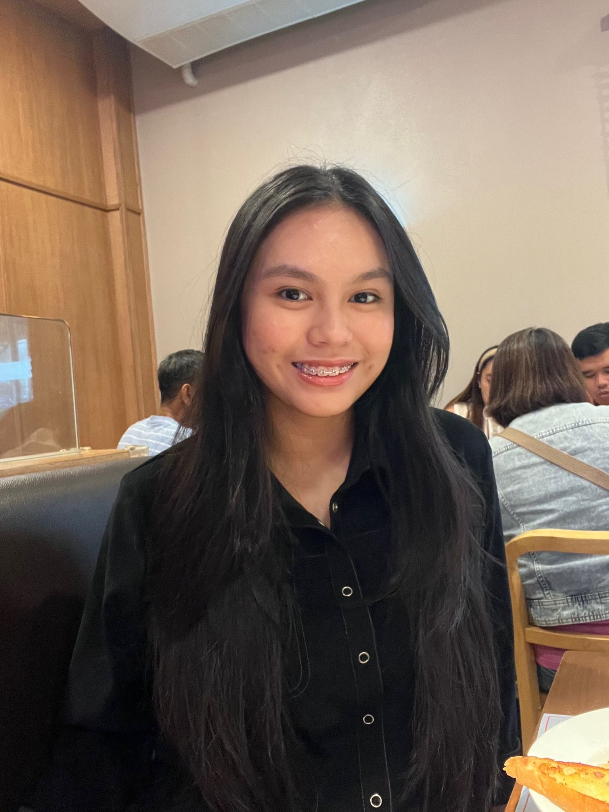

The Minds Behind the Project
Created as a final output for PI 10, this digital exhibit was meticulously designed and developed to breathe modern life into the historical legacy of José Rizal's exile in Dapitan.


Created as a final output for PI 10, this digital exhibit was meticulously designed and developed to breathe modern life into the historical legacy of José Rizal's exile in Dapitan.
